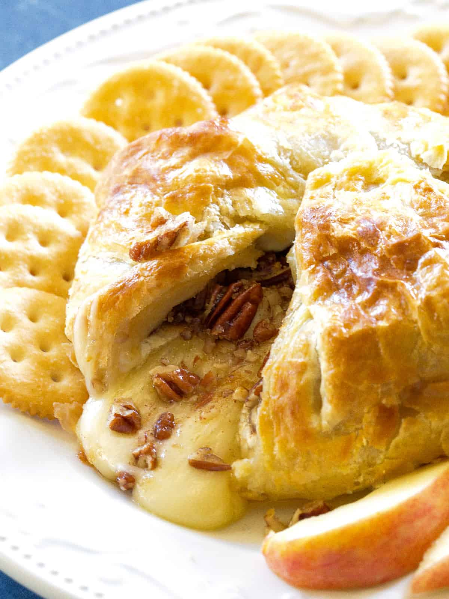

Baked Brie

Description
This baked brie will blow your mind. It is so tangy and decadent!
It's great for parties, or a quiet night in with a loved one!
Ingredients
- Wheel of Brie
- 1 Sheet of Puff Pastry
- 1/2 Cup Filling, can be nuts and or dried fruits pecans are a great option
- Honey
- 1 Egg
- Crackers or Small bread for toast
Steps
- First, preheat oven to 375 degrees F. Defrost puff pastry for approximately 15
to 20 minutes by laying it out at room temperature. Once it has defrosted, unfold it.
- Then in a saucepan toast the pecans until golden brown, approximately 5 minutes.
- Next, place the pecans on top of the Brie and drizzle the honey over the nuts.
Lay the puff pastry out on a flat surface. Place the brie in the center of the pastry.
Gather up the edges of the puff pastry, pressing around the brie and gather at the top.
Fold and pinch the edges together so it doesn’t come open. Brush the beaten egg over top and side of Brie.
- Place Brie on a cookie sheet and bake for 20 minutes until pastry is golden brown.
- Serve with crackers and or substitute crackers for fruit like sliced apples and strawberries.